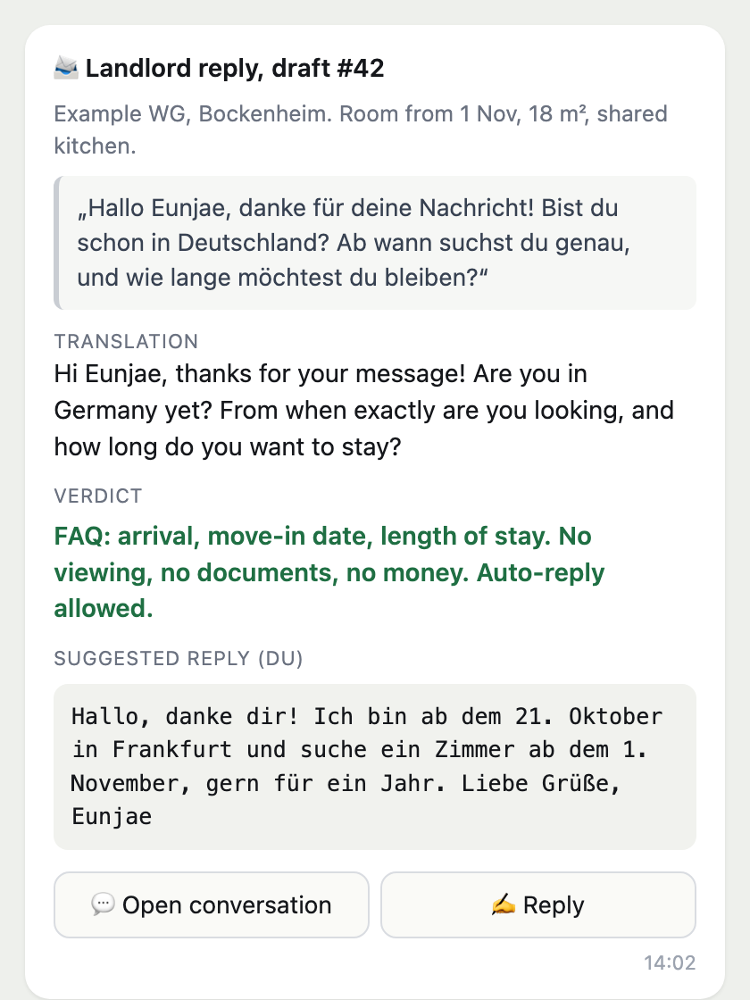
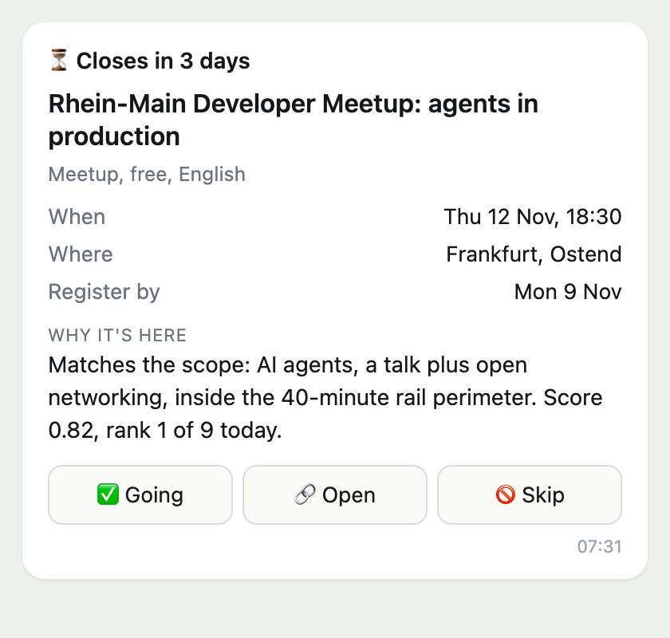

Eunjae Lee / Case study
Automations for my move to Germany
Three small programs, since September 2026 Frankfurt am Main
I moved from Seoul to Frankfurt in October 2026. Three small programs that I wrote did the boring parts for me. They did the searching and the waiting. I made the decisions.
The first one found the room where I live. The second one got me an appointment at the city office, which is hard to get. The third one tells me every morning which tech events I should sign up for before it is too late. The pictures on this page use made-up test data.
How all three work
Each program looks at websites or my mail on a schedule. It checks what it finds against rules that I wrote, like "under this price" or "closes within three days". When something fits, it sends a short message to my phone with the facts and two or three buttons.
I let the program send two kinds of message on its own. One is the first message to a landlord, when an ad passes every rule. The other is the answer to a simple question, in words that I wrote in advance. Everything else waits until I press a button. Nothing is booked or signed up for without me.
I use AI for one job only: it translates a landlord's German or drafts a reply. It never decides anything.
Why phone messages and not an app? Because I build the working part first. I can reuse the rules and the data in the next project. I cannot reuse a screen. Telegram already has buttons and a message history, so I did not have to build a screen while the rest was still changing. When the working part is stable, I build the app on top of it.
- The program looks and checks my rules.
- A message reaches my phone with the facts and buttons.
- I press a button, or the message waits.
- The program sends, books or saves the date.
The AI helps at the first step only. It translates and drafts text, and it never acts on its own.
It found the room where I live
Rooms in Frankfurt go to whoever writes first. From Seoul, seven hours ahead, I was always too late. So the program checked three room websites every three hours. It tested every new ad against five rules. They cover the rent, the move-in date, a train ride of under 40 minutes, a legal deposit and no short stays. If an ad passed all five, the program wrote the first message to the landlord for me.
When a landlord wrote back, the program read the reply in my Gmail and sent it to my phone in English, with a suggested answer. The program answered simple questions like "when can you move in?" with text that I had written in advance. Anything about a viewing, papers, money or a contract waited until I looked at it.
In the first version each message cost about $2.60, because every message opened its own browser session. After I batched the sends, a message cost $0.11.
Through the program I contacted 55 landlords in 15 days, and it sent 30 of those messages on its own. The room where I live came from a message that it sent one minute after it found the ad. Three days later I saw the room on a video call, and the contract came the day after, on 7 October. I switched the program off the next day.
- Landlords contacted
- 55
- Days to the room
- 15
- Ads checked
- about 800

It got me the city office appointment
Everyone who moves to Germany has to register their address at the city office, the Bürgeramt, and you need an appointment for that. Free appointments are rare and are gone quickly. So a small program watched the booking page for me. When a time in the hours that I chose came up, it filled in my name and e-mail.
Then it stopped and handed over to me. I solved the CAPTCHA, the small maths puzzle that the site shows, pressed the button and confirmed the e-mail. I ran it once, for my own registration, and got an appointment for 23 October.
It tells me which tech events to sign up for
Tech meetups, hackathons, talks and job fairs around Frankfurt are listed on about ten different websites. I can't check them all every day, so the program does it every morning. It picks the ones that fit me and sends them to my phone. If sign-up closes within three days, the message says so at the top.
If I press "Going", the event goes into my calendar. The program never signs me up for anything. That part I do myself.
- Mornings it ran
- 35
- Events it looked at
- 421
- Sent to my phone
- 42

What I kept for myself
There are things that the programs are not allowed to do. They never write to a landlord in their own words. They never solve the CAPTCHA. They never log in anywhere. They never sign up or pay for anything. Those are my jobs.
I decided each of these on purpose and wrote the reason down next to the code.
How it's built
The programs are written in Python and JavaScript. The messages go through Telegram. Claude, an AI model, translates and drafts text. The programs use my own Chrome browser and run on a schedule on my Mac. They share one Obsidian vault as their memory. Every decision is written down next to the code, and every coding session is recorded with Organism, a tool that I published.